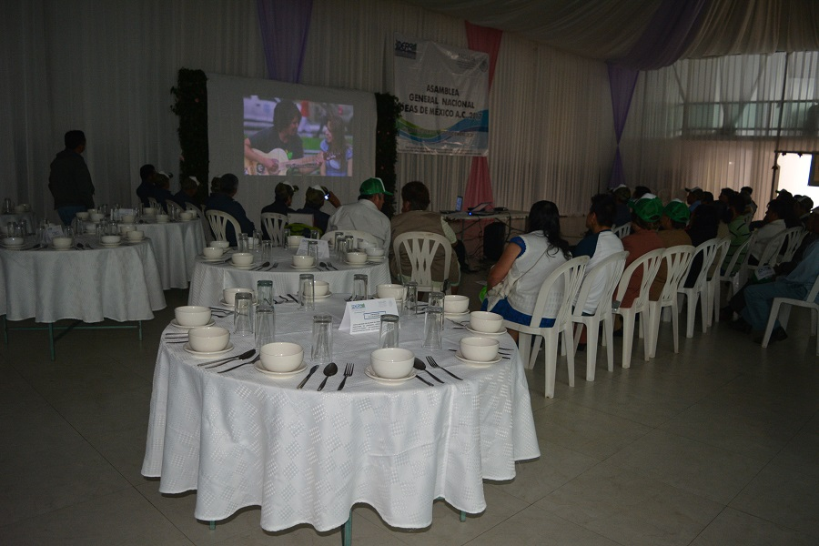

Esta asamblea se realiza anualmente con el propósito fundamental de nutrir con propuestas a nuestra organización, para la elaboración del plan anual de trabajo del año siguiente (2018); independientemente del informe de labores y de la evaluación del desempeño en el desahogo de las metas y objetivos previstos en el plan anual de trabajo del año anterior (2017).
Con el mínimo de protocolo se realizó la asamblea general nacional los días 16 y 17 de Diciembre de 2017 en la ciudad sede de nuestra A. C. Huatusco, Ver.
Con la fuerza de la juventud y la experiencia de los mayores, avanza IDEAS de México A. C.
Atentos al informe de labores.
Se recibió el apoyo de SAGARPA para su realización.
La asamblea en su desarrollo.
Rafael Martínez Cruz, Presidente del Comité Ejecutivo Nacional, presenta su informe de labores.
El Secretario General de IDEAS de México A. C. difunde y reafirma el concepto de la Asociación Civil.
Intervención del C. Francisco Tontle Guerrero, distinguido activista social.

Ing. Efraín Miranda Blanco, representante de SAGARPA.
Victor Hugo Velazquez Ramos, líder productor de café y limón.
C. José Guilebaldo Reyes Bautista, líder cañero y piloncillero.
Maestro Esteban Peña Gutiérrez del Tecnológico Superior de Huatusco participando en nombre de las instituciones educativas presentes.
Erasmo Cruz Pérez, luchador social y líder moral de la organización.
Para IDEAS de México la participación de la mujer es fundamental.
Gracias a todas las delegaciones asistentes de los diferentes municipios de las áreas de influencia de nuestra A. C. por sus propuestas y valiosas aportaciones para el plan de trabajo del año venidero. De manera genérica se exponen las actividades a realizar o de seguimiento para el año 2018, captadas de los asambleístas:
- Continuar con las tareas de difusión y divulgación de nuestra A. C.
- Continuar prestando el servicio de gestión a los productores y/o ciudadanos interesados en los diferentes programas de apoyo del Gobierno Federal, estatales y municipales.
- Continuar con las actividades de acercamiento con los diversos actores sociales: Universidades, Instituciones de educativas, Instituciones de investigación, ONG’s, etc.
- Labores de gestión ante los 3 niveles de gobierno, relativos a la asistencia social.
- Seguir promoviendo y gestionando los estudios de gran visión intermunicipales o interregionales en materia de desarrollo integral y sustentable.
- Actividades de divulgación de políticas públicas gubernamentales, reformas de ley y nuevas leyes para fomentar la vinculación entre sociedad y gobierno. “Divulgarlas con palabras de campesino”.
- Continuar con los programas de cursos de capacitación de productores rurales y profesionistas, sobre diversos temas de desarrollo.
- Continuaremos prestando el servicio de orientación y asistencia técnica en la formulación y evaluación de proyectos.
- Seguir con las actividades de promoción de la mujer en todos sus aspectos a través de la secretaría abocada a la misma.
- Continuar con la participación en el fomento de eventos, recreativos y culturales.
- Continuaremos con las labores de detección y aplicación de actividades agrónicas.
- Seguir fomentando la agroempresa, soportada en figuras jurídicas legalmente constituidas y capacitadas.
- En general, buscar el fortalecimiento interno para un mejor desahogo de nuestro objeto social.